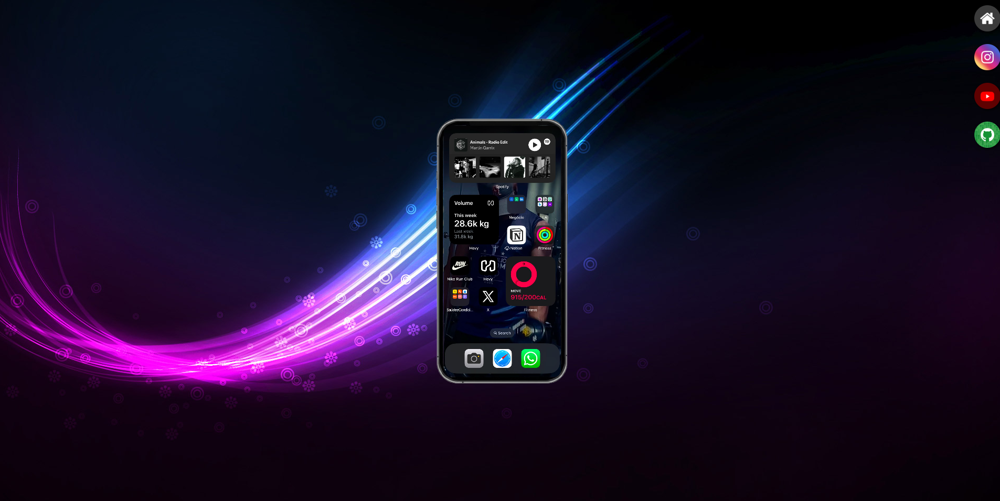
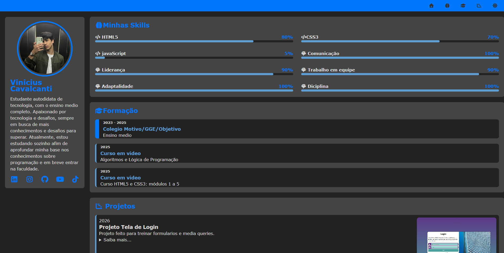

Projeto de site informativo
Um site sobre o sistema Android, focado em estrutura semântica e hierarquia de conteúdo.
Minha entrada "de verdade" no mundo da programação começou com o curso de HTML5 e CSS3 do Gustavo Guanabara, no Curso em Vídeo — um dos cursos mais tradicionais e respeitados entre quem está começando em desenvolvimento web no Brasil. Completei os 5 módulos, que cobrem desde a estrutura básica de uma página até tópicos mais avançados de estilização, responsividade e boas práticas.
Foi ali que aprendi a diferença entre estrutura (HTML) e estilo (CSS), a importância de escrever código organizado, e a pensar em como uma página se comporta em diferentes tamanhos de tela. Depois do curso, comecei a colocar a mão na massa em projetos próprios, pra treinar o que tinha aprendido.
Um site sobre o sistema Android, focado em estrutura semântica e hierarquia de conteúdo.

Uma página inspirada na literatura de cordel, com efeito parallax e tipografia estilizada.

Uma interface simulando o acesso a redes sociais, explorando iframes e navegação entre páginas.

Uma interface de login responsiva, com formulários e media queries.

Uma interface de portfólio responsiva, com seções para projetos e contato. Nela usei tudo que aprendi ao decorrer do curso.
Cada um desses projetos foi pensado pra treinar um conceito específico — não só repetir o que vi no curso, mas testar na prática.